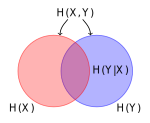
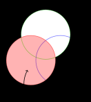
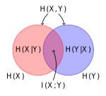
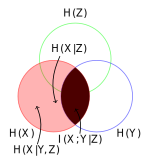
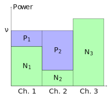
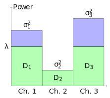

Elements of Information Theory¶
Second Edition
Thomas M. Cover, Joy A. Thomas
2006, John Wiley & Sons
Ch. 2: Entropy, relative entropy, mutual information¶
Entropy measures uncertainty of a discrete random variable. Let \(X\) be a discrete r.v. with alphabet \(\mathcal{X} = \{x: \Pr(X=x)>0\}\) and probability mass function \(p(x) = \Pr(X=x)\). The entropy of \(X\) is
\[ H(X) = \sum_{x \in \mathcal{X}} p(x)\log\frac{1}{p(x)} = \operatorname{E}_{p}\left[\log\frac{1}{p(X)}\right], \]
where \(\log\) denotes logarithm base 2 unless specified, thus the entropy value is in bits. Also, if the base of the logarithm is \(\mathrm{e}\), the entropy is measured in nats, and entropy of any base can convert to another according to the change of base rule.
Joint entropy:
\[ H(X, Y) = \sum_{x\in \mathcal{X}}\sum_{y\in \mathcal{Y}} p(x, y)\log\frac{1}{p(x, y)} = \mathrm{E}_{p(X, Y)}\left[\frac{1}{p(X, Y)}\right]. \]
Conditional entropy:
\[ \begin{aligned} H(Y|X) &= \sum_{x\in\mathcal{X}} p(x)H(Y|X = x) \\ &= \sum_{x\in \mathcal{X}}p(x)\sum_{y\in \mathcal{Y}}p(y|x)\log\frac{1}{p(y|x)}\\ &= \sum_{x\in \mathcal{X}}\sum_{y\in \mathcal{Y}}p(x, y)\log\frac{1}{p(y|x)}\\ &= \mathrm{E}\left[\frac{1}{\log p(Y|X)}\right]. \end{aligned} \]
Chain rules:
\(H(X, Y) = H(X) + H(Y|X)\).

\(H(X, Y | Z) = H(X | Z) + H(Y | X, Z)\).

Commas have higher priority than conditionings.
Relative entropy (KL Distance):
\[ D(p\|q) = \sum_{x\in \mathcal{X}}p(x)\log\frac{p(x)}{q(x)} = \mathrm{E}_p\left[\log\frac{p(X)}{q(X)}\right]. \]
Mutual information:
\[ I(X;Y) = D(p(x, y) \| p(x)p(y)) = \mathrm{E}_{p(X, Y)}\left[\log\frac{p(X, Y)}{p(X)p(Y)}\right]. \]
\[ \begin{aligned} I(X; Y) &= H(X) - H(X|Y) \\ &= H(Y) - H(Y|X)\\ &= H(X) + H(Y) - H(X, Y). \end{aligned} \]

\[ I(X; X) = H(X),\quad H(X|X) = 0. \]
Chain rule for entropy:
\[ \begin{aligned} H(X_1, X_2, \cdots, X_n) &= \sum_{i=1}^n H(X_i | X_{i-1}, \cdots, X_1) \\ &= H(X_1) + H(X_2|X_1) + H(X_3|X_2, X_1), \cdots. \end{aligned} \]
It is very obvious graphically.
Conditional mutual information:
\[ I(X; Y | Z) = H(X | Z) - H(X | Y, Z) = \mathrm{E}\left[\log\frac{p(X, Y | Z)}{p(X|Z)p(Y| Z)}\right]. \]

Semicolons have higher priority than conditionings.
Chain rule for information:
\[ \begin{aligned} I(X_1, X_2, \cdots, X_n ; Y) &= \sum_{i=1}^n I(X_i; Y | X_{i-1}, X_{i-2}, X_1) \\ &= I(X_1; Y) + I(X_2; Y | X_1) + I(X_3; Y | X_2, X_1), \cdots. \end{aligned} \]
It is obvious graphically.
Conditional relative entropy:
\[ D(p(y|x)\|q(y|x)) = \mathrm{E}_{p(X, Y)}\left[\log\frac{p(Y|X)}{q(Y|X)}\right]. \]
Chain rule for relative entropy:
\[ D(p(x, y)\|q(x, y)) = D(p(x)\|q(x)) + D(p(y|x) \| q(y|x)). \]
Independence bound on entropy: \(H(X_1, X_2, \cdots, X_n)\le \sum H(X_i)\), with equality iff all \(X_i\) are independent.
Log sum inequality:
\[ \sum a_i \log\frac{a_i}{b_i} \ge \sum a_i \log \frac{\sum a_i}{\sum b_i}. \]
Relative entropy \(D(p\| q)\) is convex in the pair \((p, q)\).
Entropy is concave, as \(H(p) = \log|\mathcal{X}| - D(p \| u)\), where \(u\) is the uniform distribution on \(\mathcal{X}\) and \(\log|\mathcal{X}| = \mathrm{E}\left[\log\frac{1}{u(x)}\right]\).
Mutual information \(I(X; Y)\) is concave with respect to \(p(x)\) for fixed \(p(y|x)\); convex with respect to \(p(y|x)\) for fixed \(p(x)\).
A Markov chain \(X\rightarrow Y \rightarrow Z\) has the following properties:
- \(p(x, y, z) = p(x)p(y|x)p(z|y)\) (definition),
- \(p(z|y) = p(z|x, y)\),
- \(p(x, z | y) = p(x|y)p(z|y)\),
- \(Z \rightarrow Y \rightarrow X\) (\(X\leftrightarrow Y \leftrightarrow Z\)),
- if \(Z = f(Y)\), \(X \rightarrow Y \rightarrow Z\),
- \(I(X; Z|Y) = 0\).
Data processing inequality: in a Markov chain \(X\rightarrow Y \rightarrow Z\), \(I(X; Y) \ge I(X; Z)\). Also, observation of \(Z\) reduces dependence between \(X\) and \(Y\): \(I(X; Y | Z) \le I(X; Y)\), which might be the opposite when they do not form a Markov chain: \(X\) and \(Y\) independently observes Bernoulli distribution with \(p=0.5\), and \(Z = X + Y\).
Fano's inequality: \(Y\) is related to \(X\) by \(p(y|x)\), and an estimator of \(Y\) is \(g(Y) = X\). Therefore, \(X \rightarrow Y \rightarrow \hat{X}\). The probability of error is defined as \(P_e = \Pr\{X\neq \hat{X}\}\). Fano's inequality is
\[ H(P_e) + P_e \log |\mathcal{X}| \ge H(X|\hat{X}) \ge H(X|Y). \]
Notation \(H(p)\)
Since a random variable is essentially a probability distribution. Entropy of a r.v. is the entropy of this distribution. That is, \(H(p_1, p_2, \cdots, p_k) = -\sum_{i=1}^k p_i\log p_i\). Furthermore, \(H(p)\) denotes the entropy of an r.v. that follows the distribution \(\{p, 1-p\}\).
Proof
\[ \begin{aligned} H(E, X|\hat{X}) &= H(X|\hat{X}) + H(E|X, \hat{X}) \\ &= H(X|\hat{X}) \\ &= H(E|\hat{X}) + H(X | E, \hat{X}) \\ &\le H(E) + H(X | E, \hat{X}), \end{aligned} \]
where
\[ \begin{aligned} H(X|E, \hat{X}) &= H((X | \hat{X}) | E) \\ &= P(E=1)H(X|\hat{X}) + P(E=0)H(X|\hat{X}) \\ &= P(E=1)H(X|\hat{X}) \\ &= P_eH(X|\hat{X}) \\ &\le P_e H(X) \\ &\le P_e \log |\mathcal{X}|. \end{aligned} \]
If \(\hat{X}\in \mathcal{X}\), since \(X \neq \hat{X}\) in the \(E=1\) case, \(H(X|E, \hat{X}) \le P_e \log (|\mathcal{X}|-1)\), and Fano's inequality changes accordingly.
If \(X\) and \(X'\) are i.i.d. with entropy \(H(X)\),
\[ \Pr(X = X') \ge 2^{-H(X)}, \]
with equality iff uniformly distributed.
Proof
\[ \Pr(X = X') = \sum p^2(x) = \sum p(x)2^{\log p(x)} = \operatorname{E}2^{\log p(x)} \overset{\text{convex}}{\ge} 2^{\operatorname{E}\log p(x)} = 2^{-H(x)}. \]
If \(X \sim p(x)\), \(X' \sim r(x)\) independently,
\[ \Pr(X = X') \ge 2^{-H(p) - D(p \| r)}, \\ \Pr(X = X') \ge 2^{-H(r) - D(r \| p)}. \\ \]
Ch. 3: Asymptotic equipartition property¶
Convergence of random variables: \(\{X_n\} \rightarrow X\) is said to be
- in probability, if \(\forall \epsilon > 0\), \(\Pr\{|X_n - X| > \epsilon\}\),
- in mean square, if \(\operatorname{E}(X_n - X)^2 \rightarrow 0\),
- with probability 1, if \(\Pr\left\{\lim\limits_{n\rightarrow \infty} X_n = X\right\} = 1\).
Asymptotic equipartition property: if \(X_1, X_2, \cdots, X_n\) are i.i.d. \(\sim p(x)\),
\[ -\frac{1}{n} \log p(X_1, X_2, \cdots, X_n) \rightarrow H(X) \quad \text{in probability.} \]
Proof
A few derivations lead to
\[ -\frac{1}{n}\sum\log p(X_i) \rightarrow -\operatorname{E}\log p(X), \]
and the law of large numbers finishes the proof.
\(A_\epsilon^{(n)}\) is the typical set with respect to \(p(x)\) iff every element \((x_1, x_2, \cdots, x_n)\in \mathcal{X}^n\), and
\[ 2^{-n(H(X) + \epsilon)} \le p(x_1, x_2, \cdots, x_n) \le 2^{-n(H(X) - \epsilon)}. \]
The equation above is equivalent to
\[ \left|-\frac{1}{n}\log p(x_1, x_2, \cdots, x_n) - H(X)\right| \le \epsilon. \]
According to AEP, \(\forall\delta > 0\), \(\exists n_0\in\mathbb{R}\), \(\forall n \ge n_0\), \(\Pr\left\{\left|-\frac{1}{n}\log p(x_1, x_2, \cdots, x_n) - H(X)\right|< \epsilon\right\} > 1 - \delta\). We can set \(\delta\) to \(\epsilon\).
\[ 2^{-n(H(X) + \epsilon)}\left|A_\epsilon^{(n)}\right| \le \sum_{A_\epsilon^{(n)}} p(x_1, x_2, \cdots, x_n) \le \sum_{\mathcal{X}^n} p(x_1, x_2, \cdots, x_n) = 1. \]
For \(n\) sufficiently large,
\[ 2^{-n(H(X) - \epsilon)}\left|A_\epsilon^{(n)}\right| \ge \sum_{A_\epsilon^{(n)}} p(x_1, x_2, \cdots, x_n) \ge \Pr\{A_\epsilon^{(n)}\} > 1 - \epsilon. \]
Therefore, indexing elements in the typical set \(A_\epsilon^{(n)}\) requires no more than \(n(H + \epsilon) + 1\) bits, and indexing elements in \(A_\epsilon^{(n)\mathrm{C}}\) requires no more than \(n\log |\mathcal{X}| + 1\) bits. To index all the elements in \(\mathcal{X}^n\), there is an additional bit to indicate whether in the typical set.
\[ \begin{aligned} \operatorname{E}l(X^n) &= \sum_{A_\epsilon^{(n)}}p(x^n)l(x^n) + \sum_{A_\epsilon^{(n)\mathrm{C}}}p(x^n)l(x^n) \\ &\le \Pr\{A_\epsilon^{(n)}\}(n(H + \epsilon) + 2) + \Pr\{A_\epsilon^{(n)\mathrm{C}}\}(n\log|\mathcal{X}| + 2) \\ &\le n(H+\epsilon) + 2 + \delta(n\log|\mathcal{X}| + 2) \\ &= n\left(H + \epsilon + \frac{2}{n} + \delta\log|\mathcal{X}| + \frac{2}{n}\right) \\ &= n(H + \epsilon'). \end{aligned} \]
For \(X^n\) i.i.d. \(\sim p(x)\), \(\operatorname{E}\left[\frac{1}{n}l(x^n)\right] \le H(X) + \epsilon\). We can encode \(X^n\) using \(nH(X)\) bits on average.
A high probability set \(B_\delta^{(n)} \subset \mathcal{X}^n\) is the smallest set with \(\Pr(B_\delta^{(n)}) \ge 1 - \delta\). \(B_\delta^{(n)}\) must have at least \(2^{nH}\) elements.
Ch. 4: Entropy rates of a stochastic process¶
A stochastic process \(\{X_i\}\) is said to be stationary if
\[ \begin{aligned} &\Pr(X_1 = x_1, X_2 = x_2, \cdots, X_n = x_n) \\ = &\Pr(X_{1+l} = x_1, X_{2+l} = x_2, \cdots, X_{n+l} = x_n). \end{aligned} \]
A discrete stationary process is said to be a Markov process (Markov chain) if
\[ \begin{aligned} &\Pr(X_{n+1} = x_{n+1} \mid X_n = x_n, \cdots, X_1 = x_1) \\ = &\Pr(X_{n+1} = x_{n+1} \mid X_n = x_n). \end{aligned} \]
And the joint distribution for a Markov process
\[ p(x_1, x_2, \cdots, x_n) = p(x_1)p(x_2|x_1)p(x_3|x_2)\cdots p(x_n|x_{n-1}). \]
A Markov process is said to be time invariant if for any \(n\),
\[ \Pr(X_{n+1}=b \mid X_n = a) = \Pr(X_2 = b \mid X_1 = a). \]
We always assume a Markov process is time invariant unless otherwise stated.
A Markov process that can go from any state to any other state with positive probability in a finite number of steps is said to be irreducible.
A Markov process that for every state, lengths of all loops it sits on has the greatest common divisor 1, is said to be aperiodic.
A Markov process at time \(n+1\) has distribution \(p(x_{n+1}) = \sum\limits_{x_n}p(x_n)P_{x_n x_{n+1}}\). The distribution such that at time \(n\) and \(n+1\) are equal is called a stationary distribution. If the initial state of a Markov process is drawn from a stationary distribution, the Markov process forms a stationary process.
Example
Derive the stationary distribution for a Markov process with transition matrix
\[ P = \begin{bmatrix} 1-\alpha & \alpha \\ \beta & 1-\beta \end{bmatrix}. \]
Solution: Let the stationary distribution be \((\mu_1, \mu_2)\). The distribution at time 1 and 2 are
\[ \begin{cases} \Pr(X_1 = 1) = \mu_1, \\ \Pr(X_1 = 1) = \mu_2, \end{cases}\quad \begin{cases} \Pr(X_2 = 1) = \mu_1(1-\alpha) + \mu_2\beta, \\ \Pr(X_2 = 1) = \mu_1\alpha + \mu_2(1-\beta), \end{cases} \]
Let those 2 distributions be equal, we obtain \(\alpha \mu_1 = \beta \mu_2\). Since \(\mu_1 + \mu_2 = 1\), the stationary distribution is
\[ \mu_1 = \frac{\beta}{\alpha + \beta}, \quad \mu_2 = \frac{\alpha}{\alpha + \beta}. \]
For an irreducible and aperiodic finite-state Markov chain, its stationary distribution is unique, and from any starting distribution, the distribution at time \(t\) tends to be stationary as \(t \rightarrow \infty\).
Entropy rate, as per symbol entropy on average:
\[ H(\mathcal{X}) = \lim_{n\rightarrow\infty} \frac{1}{n}H(X_1, X_2, \cdots, X_n). \]
If \(X_1, X_2, \cdots, X_n\) are i.i.d., \(H(\mathcal{X}) = H(X_i)\).
If \(X_1, X_2, \cdots, X_n\) are independent, \(H(X_1, X_2, \cdots, X_n) = \sum H(X_i)\), but the existence of limit need to be confirmed.
Proof
For simplicity, \(x_1, x_2, \cdots, x_n\) is denoted by \(x^n\), and \(\sum\limits_{x_i \in \mathcal{X}_i}\) is denoted by \(\sum\limits_{x_i}\).
\[ \begin{aligned} H(X_1, X_2, \cdots, X_{n+1}) &= \sum_{x^{n+1}}p(x^{n+1})\log\frac{1}{p(x^{n+1})} \\ \text{\footnotesize(seperate $x_{n+1}$, independence)} &= \sum_{x_{n+1}} \sum_{x^n} p(x^n)p(x_{n+1})\log\frac{1}{p(x^n)p(x_{n+1})} \\ &= \sum_{x_{n+1}}p(x_{n+1})\sum_{x^n}p(x^n)\log\frac{1}{p(x^n)} + \sum_{x_{n+1}}p(x_{n+1})\sum_{x^n}p(x^n)\log\frac{1}{p(x_{n+1})} \\ &= \sum_{x^n}p(x^n)\log\frac{1}{p(x^n)} + \sum_{x_{n+1}}p(x_{n+1})\log\frac{1}{p(x_{n+1})} \\ &= H(X_1, X_2, \cdots, X_n) + H(X_{n+1}). \end{aligned} \]
Entropy rate, as conditional entropy of the last symbol given history:
\[ H'(\mathcal{X}) = \lim_{n\rightarrow\infty} H(X_n \mid X_{n-1}, X_{n-2}, \cdots, X_1). \]
For a stationary process, \(H(\mathcal{X}) = H'(\mathcal{X})\), and \(H'(X)\) is non-increasing as \(H(X_{n+1} \mid X_n, \cdots, X_1) \le H(X_{n+1} \mid X_n, \cdots, X_2) = H(X_n \mid X_{n-1}, \cdots, X_1)\).
Cesaro mean: If \(a_n \rightarrow a\) and \(b_n = \dfrac{1}{n}\sum\limits_{i=1}^n a_i\), \(b_n \rightarrow a\).
For a stationary Markov process, \(H'(\mathcal{X}) = H'(\mathcal{X}) = \lim H(X_n | X_{n-1}) = H(X_2 | X_1)\).
The entropy rate of a stationary Markov chain with transition matrix \(P\), and stationary distribution \(\mu\), the entropy rate is
\[ H(\mathcal{X}) = H(X_2|X_1) = \sum_i \mu_i H(X_2 | X_1 = x_i) = \sum_i \mu_i\left(\sum_j P_{ij} \log\frac{1}{P_{ij}}\right). \]
Ch. 5: Data compression¶
A nonsingular code is a code of which every element maps to a different code. \(x \neq x' \Rightarrow C(x) \neq C(x')\).
The extension of a code \(C\) is the concatenation of codewords: \(C(x_1x_2\cdots x_n) = C(x_1)C(x_2)\cdots C(x_n)\).
A uniquely decodable code is a code that has nonsingular extension.
A prefix code or an instantaneous code is a code of which no codeword is a prefix of any other prefix of any other codeword (can be decoded without reference to future codewords, self-punctuating).
All \(\supset\) nonsingular \(\supset\) uniquely decodable \(\supset\) instantaneous.
Kraft inequality: for any instantaneous code over an alphabet of size \(D\), the codeword lengths \(l_1, l_2, \cdots\) satisfies
\[ \sum_i D^{-l_i} \le 1. \]
Conversely, from a set of codewords lengths that satisfy Kraft inequality, one can construct an instantaneous code.
Extended Kraft inequality: for any prefix code that has countably infinite codewords with length \(l_1, l_2, \cdots\),
\[ \sum_{i=1}^\infty D^{-l_i} \le 1. \]
To find the optimal code lengths, that is
\[ \begin{aligned} \operatorname{minimize~~}& L = \sum p_i l_i \\ \operatorname{s.t.~~}& \sum_i D^{-l_i} \le 1, \\ & l_i \in \mathbb{Z}^+. \end{aligned} \]
Removing the integer constraint leads to results
\[ l_i^* = \log_D p_i, \quad L^* = H_D(X). \]
The expected length \(L\) of any prefix \(D\)-ary code
\[ L \ge H_D(X), \]
with equality iff \(D^{-l_i} = p_i\) for every symbol, that is, each of the probability equals to \(D^{-n}\) for some integer \(n\), and in this case the distribution is said to be \(D\)-adic.
When the distribution is not \(D\)-adic, we choose \(l_i = \left\lceil\log_D \dfrac{1}{p_i}\right\rceil\), and that means \(\log_D \dfrac{1}{p_i} \le l_i < \log_D \dfrac{1}{p_i}+1\), finally
\[ H_D(X) \le L < H_D(X) + 1. \]
For a sequence of symbols \((x_1, x_2, \cdots, x_n) \in \mathcal{X}^n\),
\[ H(X_1, X_2, \cdots, X_n) \le \operatorname{E}l(X_1, X_2, \cdots, X_n) < H(X_1, X_2, \cdots, X_n) + 1. \]
therefore the expected per symbol length \(L_n\) satisfies
\[ \frac{H(X_1, X_2, \cdots, X_n)}{n} \le L_n^* < \frac{H(X_1, X_2, \cdots, X_n)}{n} + \frac{1}{n}. \]
If \(X_1, X_2, \cdots X_n\) is a stationary stochastic process, \(L_n^* \rightarrow H(\mathcal{X})\). The expected number of bits required per symbol to describe the process is the entropy rate.
If \(X_i\) are i.i.d., \(H(\mathcal{X}) \le L_n < H(\mathcal{X}) + \dfrac{1}{n}\).
If we estimate the distribution of \(X\) to be \(q(x)\), but the true distribution is \(p(x)\), the code assignment \(l(x) = \left\lceil\log\frac{1}{q(x)}\right\rceil\), the penalty for expected length is the relative entropy:
\[ H(p) + D(p\|q) \le \operatorname{E}_p l(X) < H(p) + D(p\|q) + 1. \]
McMillan theorem: any uniquely decodable \(D\)-ary code also satisfies Kraft inequality, and the converse holds too.
Shannon code assigns a symbol of probability \(p_i\) with codeword length \(\left\lceil\log\frac{1}{p_i}\right\rceil\), but it is not necessarily optimal.
Example
Two symbols with probabilities \(\{0.0001, 0.9999\}\), an optimal code requires 1 codeword of length 1, but Shannon code obviously does not.
An optimal code does not necessarily always have codeword lengths less than \(\left\lceil\log\frac{1}{p_i}\right\rceil\).
Example
Huffman code for distribution \(\{\frac{1}{3}, \frac{1}{3}, \frac{1}{4}, \frac{1}{12}\}\) has codeword lengths (2, 2, 2, 2) or (1, 2, 3, 3) (yes, not unique), while \(3 > \log\left(\frac{1}{4}\right)^{-1}\).
Fano code orders symbols in decreasing order of probabilities, and each time divide the set into almost equal parts. It is suboptimal.
\(F(x)\) denotes the cumulative distribution function, and a modified one \(\bar{F}(x) = \sum_{a<x}p(a) + \frac{1}{2}p(x)\), is the probability of less than middle of \(x\). Write \(\bar{F}(x)\) in binary and truncate to \(\left\lceil\log\frac{1}{p(x)}\right\rceil + 1\) after decimal. This prefix code is called Shannon-Fano-Elias code and has expected length \(L < H(X) + 2\)
Competitive optimality of Shannon code (\(l(x) = \left\lceil\log\frac{1}{p(x)}\right\rceil\)): for any uniquely decodable code with codeword lengths \(l'(x)\),
\[ \Pr(l(x) \ge l'(x) + c) \le \frac{1}{2^{c-1}}, \]
\[ \Pr(l(x) < l'(x)) \ge \Pr(l(x) > l'(x)). \]
Proof
For the first inequality, extend then use McMillan ineq.
\[ \text{LHS} \le \sum_{x:p(x)\le 2^{-l'(x) - c + 1}} p(x) \le 2^{-(c-1)}. \]
For the second inequality, prove
\[ \operatorname{E}\operatorname{sgn}(l(x) - l'(x)) \le 0, \]
where \(\operatorname{sgn}(x) \le 2^x - 1\) for \(x\in\mathbb{Z}\).
Also, for any \(f(x) \le 2^x - 1\) for \(x\in\mathbb{Z}\), \(\operatorname{E}\operatorname{sgn}f(l(x) < l'(x)) \le 0\).
Example: generation of discrete distributions \(X\) from fair coins:
Algorithm: generate a tree, of which each leaf is assigned to a symbol \(y\). This tree should be binary complete. Leaf \(y\) at depth \(t\) has probability \(2^{-t}\), and the path from root to it represents its codeword. This tree has expected depth of each leaf
\[ \operatorname{E}T = \sum_{y\in\mathcal{Y}}t(y)2^{-t(y)} = H(Y). \]
Now, map \(Y\) to \(X\) by aggregating groups of proper \(y\) and assign each group/single symbol to \(X\). This is a many-to-one mapping.
This is equivalent to expanding each \(p(x) = \sum_i2^{-k}\).
\(H(X) \le H(Y)\), therefore \(H(X) \le \operatorname{E}T\).
This tree can be infinite, for example \(p(x=a) = 2/3\) and \(p(x=b) = 1/3\).
When \(X\) is dyadic, \(\operatorname{E}T = H(X)\).
Finally, the expected number of bits required \(\operatorname{E}T\) satisfies
\[ H(X) \le \operatorname{E}T < H(X)+2. \]
Ch. 7: Channel capacity¶
A communication system:
\[ \underset{\text{message}} W \xrightarrow{\text{encoder}} X^n \xrightarrow[p(y|x)]{\text{channel}}Y^n \xrightarrow{\text{decoder}} \underset{\text{estimate of } W} W \]
A channel is said to be memoryless if its probability distribution of output depends only on the input at that time, that is, conditionally independent of previous input/output.
The "information" channel capacity of a discrete memoryless channel is defined as
\[ C = \max_{p(x)} I(X;Y), \]
that is the maximum number of distinguishable signals can be transmitted per use of this channel.
By this we have that the noiseless binary channel has capacity of 1 bit, which is achieved by \(p = \{0.5, 0.5\}\)
A noiseless binary channel has capacity of 1 bit, which is achieved by \(p = \{0.5, 0.5\}\). In this channel \(H(Y|X) = 0\) since the knowledge of \(X\) completely eliminates uncertainty of \(Y\), and it also holds for noisy channel with nonoverlapping outputs.
Binary symmetric channel:
\[ \begin{aligned} C &= \max_{p(x)} H(Y) - H(Y|X) \\ &= 1 - H(p). \end{aligned} \]
Binary erasure channel:
\[ C = \max_{p(x)} H(Y) - H(\alpha). \]
The distribution of \(Y\) is \(\{(1-\pi)(1-\alpha), \alpha, \pi(1-\alpha)\}\), assuming \(\Pr(X = 1) = \pi\), thus maximum is reached at \(\pi = 1/2\), \(C = 1-\alpha\). That is, a proportion of \(\alpha\) bits are lost per transmit.
In a transition matrix, item on \(x\)-th row and \(y\)-th col is \(p(y|x)\).
\[ p(y|x) = \begin{bmatrix} .3 & .2 & .5 \\ .5 & .3 & .2 \\ .2 & .5 & .3 \end{bmatrix} \]
\(x\)-th row is the conditional distribution \(P(Y|X = x)\).
\[ \begin{aligned} p(Y = y_0) &= \sum_x p(Y = y_0, X = x) \\ &= \sum_x p(Y = y_0 \mid X = x)p(X = x) \\ &= \sum_{r \in \mathrm{rows}} p(r) p(Y = y_0, r) \\ &= \text{weighted sum along the column of } y_0. \end{aligned} \]
In a symmetric channel, transition matrix rows are permutations of each other and cols are permutations of each other.
In a weakly symmetric channel, transition matrix rows are permutations of each other and all col sums are equal. It achieves uniform \(Y\) when \(X\) is uniformly distributed. Therefore \(C = \log|\mathcal{Y}| - H(r)\), \(r\) in any row.
Properties of channel capacity:
- \(C \ge 0\), (\(I(X;Y) \ge 0\)).
- \(C \le \log|\mathcal{X}|\), \(C \le \log|\mathcal{Y}|\).
- \(I(X; Y)\) is continuous and concave on \(p(x)\).
A discrete channel is denoted by \((\mathcal{X}, p(y|x), \mathcal{Y})\), where \(\forall x \forall y, p(y|x) \in [0, 1]\), and \(\forall x \sum\limits_y p(y|x) = 1\).
A discrete memoryless channel (DMC) has its \(n\)-th extension \((\mathcal{X}^n, p(y^n|x^n), \mathcal{Y}^n)\). Memorylessness is
\[ p(y_k \mid x^k, y^{k-1}) = p(y_k \mid x_k), \]
where subscript \(\cdot_k\) denotes the \(k\)-th element, and superscript \(\cdot^k\) denotes the sequence of the first \(k\) elements.
A DMC is said to be without feedback, when its inputs do not depend on past outputs:
\[ p(x_k \mid x^{k-1}, y^{k-1}) = p(x_k \mid x^{k-1}). \]
It satisfies
\[ p(y^n | x^n) = \prod_{i=1}^n p(y_i | x_i). \]
An \((M, n)\) code has the codebook (the set of codewords) \(\{x^n(1), x^n(2), \cdots, x^n(M)\}\). Its decoding function \(g:\mathcal{Y}^n\rightarrow\{1, 2, \cdots, M\}\) is deterministic.
Given message index \(i\), the conditional probability of error of a channel is defined by
\[ \lambda_i = \Pr(g(Y^n) \neq i \mid X^n = x^n(i)). \]
The maximal probability of error of a channel is defined by
\[ \lambda^{(n)} = \max_{i \in \{1, 2, \cdots, M\}} \lambda_i. \]
The average probability of error of a channel is defined by
\[ P_e^{(n)} = \frac{1}{M}\sum_{i=1}^M\lambda_i. \]
The rate of a \((M, n)\) code is defined by
\[ R = \frac{\log M}{n} \]
in bits per transmission, and it is said to be achievable if there exists a sequence of \((\lceil2^{nR}\rceil, n)\) codes (to specify among \(M\) messages, \(\log M\) bits are required), such that \(\lim\limits_{n\rightarrow \infty} \lambda^{(n)} = 0\).
The capacity of a channel is the supremum of all achievable rates.
The set of joint typical sequences is
\[ \begin{aligned} A_\epsilon^{(n)} = \{ &(x^n, y^n) \in \mathcal{X}^n \times \mathcal{Y}^n: \\ &\left|-\frac{1}{n}\log p(x^n) - H(X)\right| < \epsilon, \\ &\left|-\frac{1}{n}\log p(y^n) - H(Y)\right| < \epsilon, \\ &\left|-\frac{1}{n}\log p(x^n, y^n) - H(X, Y)\right| < \epsilon \}, \end{aligned} \]
where \(p(x^n, y^n) = \prod\limits_{i=1}^n p(x_i, y_i)\).
Joint AEP: if \((X^n, Y^n)\) are i.i.d. drawn from \(p(x^n, y^n) = \prod\limits_{i=1}^n p(x_i, y_i)\):
\[ \Pr\left((X^n, Y^n) \in A_\epsilon^{(n)}\right) \rightarrow 1, \]
\[ \left|A_\epsilon^{(n)}\right| \le 2^{n(H(X, Y) + \epsilon)}, \]
and if \((\tilde{X}^n, \tilde{Y}^n) \sim p(x^n)p(y^n)\),
\[ \Pr\left((\tilde{X}^n, \tilde{Y}^n)\in A_\epsilon^{(n)}\right) \le 2^{-n(I(X;Y) - 3\epsilon)}, \]
and for sufficiently large \(n\),
\[ \Pr\left((\tilde{X}^n, \tilde{Y}^n)\in A_\epsilon^{(n)}\right) \ge (1-\epsilon)2^{-n(I(X;Y) + 3\epsilon)}. \]
Channel coding theorem: for a DMC, and rate \(R < C\) is achievable. That is, there exists a sequence of \((2^{nR}, n)\) codes, for \(\forall R < C\), \(\lambda^{(n)} \rightarrow 0\).
Conversely, any sequence of \((2^{nR}, n)\) codes with \(\lambda^{(n)} \rightarrow 0\) must have \(R \le C\).
Proof
Generate \((2^{nR}, n)\) codes according to \(p(x^n) = \prod\limits_{i=1}^np(x_i)\), and the \(2^{nR}\) codewords are
\[ \mathcal{C} = \begin{bmatrix} x_1(1), x_2(1), \cdots, x_n(1) \\ x_1(2), x_2(2), \cdots, x_n(2) \\ \vdots \\ x_1(2^{nR}), x_2(2^{nR}), \cdots, x_n(2^{nR}) \end{bmatrix}, \]
where \(w\)-th row is the codeword for message \(w\). Therefore \(\Pr(\mathcal{C}) = \prod\limits_{w=1}^{2^{nR}}\prod\limits_{i=1}^{n} p(x_i(w))\),
In this channel, both sender and receiver knows \(\mathcal{C}\) and \(p(y|x)\).
Choose a message \(W\) uniformly, that is \(\Pr(W = w) = 2^{-nR}\), and send over the channel.
\(Y^n\) is received and \(p(y^n | x^n(w)) = \prod\limits_{i=1}^{n} p(y_i | x_i(w))\)
Receiver guesses \(W\) by joint typical decoding: a unique \((X^n(\hat{W}), Y^n)\) is joint typical. If not, error.
Let \(\mathcal{E}\) be the event \(\hat{W} \neq W\), and \(E_i\) be the event \((X^n(i), Y^n) \in A_\epsilon^{(n)}\). Since error spread equally on all messages, without loss of generality,
\[ \begin{aligned} P(\mathcal{E}) &= \sum_\mathcal{C} \Pr(\mathcal{C})\overline{\lambda_w(\mathcal{C})} \\ &= \frac{1}{2^{nR}}\sum_{w=1}^{2^{nR}}\sum_{\mathcal{C}}\Pr(\mathcal{C})\lambda_w(\mathcal{C}) \\ &= \sum_\mathcal{C} \Pr(\mathcal{C})\lambda_1(\mathcal{C}) \\ &= \Pr(\mathcal{E} \mid w=1) \\ &= \Pr\left(E_i^C \cup \bigcup_{i=2}^{2^{nR}} E_i \mid w = 1\right) \\ &\le \Pr(E_1^C \mid w=1) + \sum_{i=2}^{2^{nR}}\Pr(E_i \mid w=1) \end{aligned} \]
By joint AEP, for sufficiently large \(n\),
\[ \Pr(E_1^C \mid w=1) = \Pr((X_1^n, Y^n) \not\in A_\epsilon^{(n)} \mid w=1) \le \epsilon, \]
\[ \sum_{i=2}^{2^{nR}}\Pr(E_i \mid w=1) \le \sum_{i=2}^{2^{nR}}2^{-n(I(X;Y) - 2\epsilon)}\le 2^{3n\epsilon}2^{-n(I(X;Y) - R)} \le \epsilon. \]
therefore \(\Pr(\mathcal{E} \mid w=1) = 2\epsilon\), that is, average error probability can be arbitrarily small.
Choose the best codebook \(\mathcal{C}^*\) such that \(\Pr(\mathcal{E} \mid \mathcal{C}^*) \le 2\epsilon\), and that implies at least half codewords \(i\) in \(\mathcal{C}^*\) have \(\lambda_i < 4\epsilon\). Reindex these \(2^{nR-1}\) codewords have rate \(R-\frac{1}{n}\). This new code of rate arbitrarily close to capacity, has its maximum error probability \(\lambda^{(n)} < 4\epsilon\).
Zero error codes: \(P_e^{(n)} = 0 \Rightarrow R \le C\).
Proof
\[ \begin{aligned} nR &\le H(W) \\ &= H(W|Y^n) + I(W;Y^n) \\ \text{\footnotesize(zero error)} &= I(W;Y^n) \\ {\footnotesize(W\rightarrow X^n(W) \rightarrow Y^n)} &\le I(X^n; Y^n) \\ &= \sum_{i=1}^n I(X_i; Y_i) \\ \text{\footnotesize(see below)} &\le nC \end{aligned} \]
Converse to the coding theorem: any sequence of \((2^{nR}, n)\) codes with \(\lambda^{(n)} \rightarrow 0\) must have \(R \le C\).
Proof
\(\lambda^{(n)} \rightarrow 0\) implies \(P_e^{(n)} \rightarrow 0\). By Fano's inequality, \(H(W|\hat{W}) \le 1 + P_e^{(n)}nR\).
\[ \begin{aligned} I(X^n; Y^n) &= H(Y^n) - H(Y^n | X^n) \\ &= H(Y^n) - \sum_{i=1}^n H(Y_i \mid Y_1, Y_2, \cdots, Y_i-1, X^n) \\ &= H(Y^n) - \sum_{i=1}^n H(Y_i \mid X_i) \\ &\le \sum_{i=1}^n H(Y_i) - \sum_{i=1}^n H(Y_i \mid X_i) \\ &\le \sum_{i=1}^n I(X_i ; Y_i) \\ &\le nC. \end{aligned} \]
That is, capacity per transmission do not increase when channel used multiple times.
Hence,
\[ \begin{aligned} nR &= H(W) \\ &= H(W|\hat{W}) + I(W;\hat{W}) \\ &\le 1 + P_e^{(n)}nR + I(W;\hat{W}) \\ &\le 1 + P_e^{(n)}nR + I(X^n;Y^n) \\ &\le 1 + P_e^{(n)}nR + nC. \end{aligned} \]
That leads to \(R \le P_e^{(n)}R + \dfrac{1}{n} + C\) then \(R \le C\).
At \(R \le C\), \(P_e^{(n)} \rightarrow 0\) exponentially; at \(R > C\), \(P_e^{(n)} \rightarrow 1\) exponentially.
The feedback capacity is the capacity when all received symbols are immediately sent back noiselessly, and used to determine what to send next:
\[ C_{\mathrm{FB}} = C. \]
Proof
Let \(R\) be the rate with feedback.
\[ \begin{aligned} nR &\le 1 + P_e^{(n)}nR + I(W;\hat{W}) \\ &\le 1 + P_e^{(n)}nR + I(W;Y^n). \end{aligned} \]
\[ \begin{aligned} I(W;Y^n) &= H(Y^n) - H(Y^n \mid W) \\ &= H(Y^n) - \sum_{i=1}^n H(Y_i \mid Y_1, Y_2, \cdots, Y_{i-1}, W) \\ {\footnotesize (X_i \text{ determines }Y_1, \cdots, Y_{i-1}, W)}&= H(Y^n) - \sum_{i=1}^n H(Y_i \mid Y_1, Y_2, \cdots, Y_{i-1}, W) \\ &\le \sum_{i=1}^n H(Y_i) - \sum_{i=1}^n H(Y_i | X_i) \\ &= \sum_{i=1}^nI(X_i; Y_i) \\ &\le nC, \end{aligned} \]
therefore \(R \le C\). And because any rate achieved by non-feedback code is achievable by feedback code, \(C_{\mathrm{FB}} \ge C\), thus \(C_{\mathrm{FB}} = C\).
Ch. 8: Differential entropy¶
The differential entropy of a continuous variable \(X\) is
\[ h(X) = -\int_S f(x)\log f(x) \mathrm{d}x. \]
where \(f(x)\) is the probability density function of \(X\) and \(S\) is the support set of \(X\), \(S = \{x: f(x) > 0\}\).
- Uniform distribution: \(X \sim U(a, b)\), \(\displaystyle h(X) = -\int_a^b \frac{1}{b-a}\log\frac{1}{b-a}\mathrm{d}x = \log (b-a)\).
- Gaussian distribution: \(X \sim N(0, \sigma^2)\), \(\displaystyle h(X) = \frac{1}{2}\ln 2\pi \mathrm{e}\sigma^2\) nats, or \(\displaystyle \frac{1}{2}\log 2\pi \mathrm{e}\sigma^2\) bits.
- Multivariate Gaussian distribution: \(X \sim N_n(\mu, K)\), \(\displaystyle f(X) = \frac{1}{(2\pi)^{n/2} |K|^{1/2}} \exp\left(-\frac{1}{2}(x-\mu)^\top K^{-1} (x - \mu)\right)\), \(\displaystyle h(X) = \frac{1}{2}\log (2\pi\mathrm{e})^n|K|\).
Note
\[ \operatorname{E}g(x) = \int g(x)p(x)\mathrm{d}x. \]
\[ \int_{-\infty}^{+\infty} N(x; 0, \sigma^2)\, x^2\mathrm{d}x = \sigma^2. \]
AEP: for i.i.d. \(X_i\),
\[ -\frac{1}{n}\log f(X_1, X_2, \cdots, X_n) \rightarrow \operatorname{E}[-\log f(X)] = h(X) \quad \text{in probability}. \]
The volume of a set \(A \in \mathbb{R}^n\)
\[ \operatorname{Vol}(A) = \int_A \mathrm{d}x_1 \mathrm{d}x_2 \cdots \mathrm{d}x_n. \]
Typical set:
\[ A_\epsilon^{(n)} = \left\{(x_1, x_2, \cdots, x_n) \in S^n: \left|-\frac{1}{n}\log f(x_1, x_2, \cdots, x_n) - h(X)\right| \le \epsilon \right\}, \]
where \(f(x_1, x_2, \cdots, x_n) = \prod_i f(x_i)\).
For \(n\) sufficiently large,
\[ \Pr\left(A_\epsilon^{(n)}\right) > 1 - \epsilon. \]
For all \(n\),
\[ \operatorname{Vol}\left(A_\epsilon^{(n)}\right) \le 2^{n(h(X)+\epsilon)}. \]
For \(n\) sufficiently large,
\[ \operatorname{Vol}\left(A_\epsilon^{(n)}\right) \ge (1 - \epsilon)2^{n(h(X)-\epsilon)}. \]
\(A_\epsilon^{(n)}\) is the smallest volume set with probability \(\ge 1 - \epsilon\), to the first order in exponential.
Relation to discrete entropy: quantize \(X\) into equal bins with length \(\varDelta\). According to mean value theorem, \(p_i = \int_{i\varDelta}^{(i+1)\varDelta}f(x)\mathrm{d}x = f(x_i)\varDelta\). Entropy of the quantized version
\[ h(X^\varDelta) = \sum_i \varDelta f(x_i)\log\frac{1}{f(x_i)} - \log\varDelta. \]
Therefore, \(H(X^\varDelta) + \log\varDelta \rightarrow h(X)\) as \(\varDelta \rightarrow 0\). Quantize \(X\) into 2^n equal sections, the entropy is approximately \(h(X) + n\).
Example
\(X \sim U(0, 1)\), \(h(X) = 0\). If quantization bin length \(\varDelta = 2^n\), \(H(X^\varDelta) = n\). It requires \(n\) bits to describe \(X\) to \(n\) bits (\(2^{-n}\)) accuracy.
In general, \(h(X) + n\) is the number of bits required on average to describe an continuous random variable to \(n\) bits accuracy.
Joint differential entropy:
\[ \begin{aligned} h(X_1, X_2, \cdots, X_n) &= -\int f(x_1, x_2, \cdots, x_n)\log f(x_1, x_2, \cdots, x_n)\mathrm{d}x_1\mathrm{d}x_2\cdots\mathrm{d}x_n \\ &= -\operatorname{E} \log f(x_1, x_2, \cdots, x_n). \end{aligned} \]
\(h(X_1, X_2, \cdots, X_n) \le \sum h(X_i)\), with equality iff all \(X_i\) are independent.
Conditional differential entropy:
\[ \begin{aligned} h(X|Y) &= - \int f(x, y)\log f(x | y)\mathrm{d}x\mathrm{d}y \\ &= -\operatornamewithlimits{E}_{f(x,y)}\log f(x|y) \\ &= h(X, Y) - h(Y). \end{aligned} \]
The last equality holds if both items are finite.
\(h(X | Y) \le h(X)\), with equality iff \(X\) and \(Y\) are independent.
Relative entropy:
\[ D(f \| g) = \int_{S_f} f \log \frac{f}{g}, \]
\(S_f \subseteq S_g\) if the relative entropy is finite.
\(D(f\|g) \ge 0\), with equality iff \(f = g\) almost everywhere.
Mutual information:
\[ \begin{aligned} I(X;Y) &= D(f(x, y) \| f(x)f(y)) \\ &= \int f(x, y)\log\frac{f(x, y)}{f(x)f(y)} \mathrm{d}x\mathrm{d}y. \end{aligned} \]
If there are two finite partitions \(P\) and \(Q\) that quantize \(X\) into discrete random variables \([X]_P\) and \([X]_Q\) respectively,
\[ I(X;Y) = \sup_{P, Q} I([X]_P, [X]_Q). \]
This applies to even distributions with singular density parts.
\(I(X; Y) \ge 0\), with equality iff \(X\) and \(Y\) are independent.
Example: correlated Gaussian random variables
\[ (X, Y) \sim N(\boldsymbol{0}, K), \quad K = \begin{bmatrix} \sigma^2 & \rho\sigma^2 \\ \rho\sigma^2 & \sigma^2 \end{bmatrix}. \]
\[ h(X, Y) = \frac{1}{2}\log(2\pi\mathrm{e})^2(1-\rho^2)\sigma^4. \]
\[ I(X; Y) = h(X) + h(Y) - h(X, Y) = -\frac{1}{2}\log(1 - \rho^2). \]
When \(\rho = 0\), \(X\) and \(Y\) are independent, \(I = 0\).
When \(\rho = \pm 1\), \(X\) and \(Y\) are perfectly correlated, \(I = +\infty\). While in discrete cases, \(I(X; Y) = H(X) = H(Y)\).
Joint differential entropy of fully dependent r.v.s: \(X \sim U(0, 1), Y = X, H(X, Y) = \ ?\)
First we derive the joint probability density of \(X\) and \(Y\) step by step. The probability density of \(X\) is
\[ p(x) = \begin{cases} 1, & x \in (0, 1), \\ 0, & \text{otherwise}. \end{cases} \]
And the conditional probability density \(p(y|x) = \delta(y-x)\), where \(\delta\) is the Dirac delta function. Therefore,
\[ p(x, y) = p(y|x)p(x) = \delta(y-x)p(x). \]
Check unit measure property: \(\int_0^1 \delta(y-x)\mathrm{d}x = p(y) = p(x)\), or, \(\forall y\in (0, 1), 0 \in \{y - x: x\in (0, 1)\}\), thus \(\int_0^1 \delta(y-x)\mathrm{d}x = 1\). Then \(\int_\mathbb{R} p(x, y) \mathrm{d}x\mathrm{d}y = \int_0^1\int_0^1 \delta(y-x)p(x) \mathrm{d}x\mathrm{d}y = 1\).
\[ \begin{aligned} h(X, Y) &= -\int_0^1\int_0^1 \delta(y-x)p(x)\log(\delta(y-x)p(x))\mathrm{d}x\mathrm{d}y\\ &= -\int_0^1\int_0^1 \delta(y-x)\log\delta(y-x)\mathrm{d}x\mathrm{d}y.\\ \end{aligned} \]
Let \(u(y) = \int_0^1 \delta(y-x)\log\delta(y-x)\mathrm{d}x\) for \(x \in (0, 1)\), with domain \(y \in (0, 1)\).
Dirac delta function can be represented by \(\displaystyle\delta(x) = \lim_{a\rightarrow 0} \delta_a(x)\), where
\[ \delta_a(x) = \begin{cases} \dfrac{1}{2a}, & x\in (-a, a) \\ 0, &\text{otherwise}. \end{cases} \]
Thus, for any \(x_0 \in (0, 1)\),
\[ \begin{aligned} u(y) &= \lim_{a\rightarrow 0} \int_0^1 \delta_a(y-x_0)\log\delta_a(y-x_0)\mathrm{d}y \\ &= \lim_{a\rightarrow 0} \int_{x_0 - a}^{x_0 + a} \frac{1}{2a}\log\frac{1}{2a}\mathrm{d}y \\ &= \lim_{a\rightarrow 0} \log\frac{1}{2a} \\ &= +\infty. \end{aligned} \]
The joint differential entropy \(h(X, Y) = -\int_0^1 u(y) \mathrm{d}y = -\infty\), and mutual information \(I(X, Y) = h(X) + h(Y) - h(X, Y) = +\infty\). In general, if probability distribution occupies manifold of less dimension than the space, its differential entropy is \(-\infty\).
Chain rule for differential entropy: same as that in the discrete scenarios,
\[ h(X_1, X_2, \cdots, X_n) = \sum_{i=1}^n h(X_i \mid X_1, X_2, \cdots, X_{i-1}). \]
Hadamard's inequality:
\[ |K| \le \prod K_{ii}. \]
Entropy of linear function of \(X\):
\[ h(X + c) = h(X). \]
\[ h(aX) = h(X) + \log |a|. \]
\[ h(AX) = h(X) + \log \left|\det A \right|. \]
For \(X\in \mathbb{R}^n\) that have mean \(\boldsymbol{0}_n\) and covariance \(\operatorname{E}XX^\top = K\),
\[ h(X) \le \frac{1}{2}\log(2\pi\mathrm{e})^n |K|, \]
with equality iff \(X \sim N(\boldsymbol{0}, K)\). That is, Gaussian maximizes entropy over all distributions with the same variance.
Let \(\hat{X}\) be any estimator of \(X\in\mathbb{R}\), (\(X\) is estimated to be some known value \(\hat{X}\)),
\[ \operatorname{E}(X - \hat{X})^2 \ge \frac{1}{2\pi\mathrm{e}} \mathrm{e}^{2h(X)}, \]
with equality iff \(X \sim N(\hat{X}, \sigma^2)\).
Proof
\[ \begin{aligned} \operatorname{E}(X - \hat{X})^2 &\ge \min_{\hat{X}} \operatorname{E}(X - \hat{X})^2, \\ &= \operatorname{E}(X - \operatorname{E}(X))^2 \\ &= \operatorname{Var}(X) \\ &\ge \frac{1}{2\pi\mathrm{e}} \mathrm{e}^{2h(X)}. \end{aligned} \]
Generally, given side information \(Y\), estimator \(\hat{X}(Y)\) satisfies
\[ \operatorname{E}(X - \hat{X}(Y))^2 \ge \frac{1}{2\pi\mathrm{e}}\mathrm{e}^{2h(X|Y)}. \]
Ch. 9: Gaussian channel¶
A Gaussian channel is a time-discrete channel with output \(Y_i\), input \(X_i\) and Gaussian noise \(Z_i\) at time \(i\)
\[ Y_i = X_i + Z_i,\quad Z \sim N(0, N). \]
With power constraint \(P\), the information capacity is
\[ C = \max_{f(x):\ \operatorname{E}X^2 \le P} I(X; Y) = \frac{1}{2}\log\left(1 + \frac{P}{N}\right). \]
Proof
\[ \begin{aligned} I(X;Y) &= h(Y) - h(X + Z \mid X) \\ &= h(Y) - h(Z \mid X) \\ \text{\footnotesize(independence)} &= h(Y) - h(Z). \end{aligned} \]
\[ \operatorname{E}Y^2 = \operatorname{E}X^2 + 2\operatorname{E}X\operatorname{E}Z + \operatorname{E}Z^2 \le P + N. \]
Note that \(\dfrac{Z}{\sqrt{n}} \sim \chi^2(1)\) therefore \(\operatorname{E}\dfrac{Z}{\sqrt{n}} = 1\).
\[ \begin{aligned} I(X;Y) &\le \frac{1}{2}\log 2\pi\mathrm{e}(P+N) - \frac{1}{2}\log 2\pi\mathrm{e}N \\ &= \frac{1}{2}\log \left(1 + \frac{P}{N}\right) \end{aligned} \]
An \((M, n)\) code for a Gaussian channel consists of
- index set \(\{1, 2, \cdots, M\}\),
- encoding function \(x: \{1, 2, \cdots M\}\mapsto \mathcal{X}^n\), yielding codewords \(x^n(\cdot)\), and constraint on power for each message \(\sum_{i=1}^n x_i^2(w) \le nP\) for \(w = 1, 2, \cdots M\),
- decoding function \(g: \mathcal{Y} \mapsto \{1, 2, \cdots M\}\).
The capacity of Gaussian channel with power constraint \(P\) and noise variance \(N\) achievable is
\[ C = \frac{1}{2}\log\left(1 + \frac{P}{N}\right). \]
Proof
Generate a codebook \(X_i(w)\) i.i.d. \(\sim N(0, P-\epsilon)\), \(i = 1, 2, \cdots n\), \(w = 1, 2, \cdots, 2^{nR}\) and encode into codewords \(X^n(w)\). These codewords are decoded to \(\hat{W} = w\), or error. Without loss of generality, \(w = 1\) was sent, thus \(Y^n = X^n(1) + Z^n\).
Define \(E_0 = \left\{\frac{1}{n}\sum X_i^2(1) > P\right\}\), \(E_i = (X^n(i), Y^n) \in A_\epsilon^{(n)}\). Error occurs if \(E_0\) or \(E_1^C\) or \(E_2 \cup E_3 \cup \cdots \cup E_{2^{nR}}\), denoted by \(\mathcal{E}\).
\[ \Pr(\mathcal{E} \mid W = 1) \le P(E_0) + P(E_1^C) + \sum_{i=2}^{2^{nR}} P(E_i). \]
Law of large numbers indicates that \(P(E_0) \rightarrow 0\) as \(n \rightarrow 0\). And \(P(E_1^C) \le \epsilon\) for \(n\) sufficiently large by joint AEP.
\[ P_e^{(n)} = \Pr(\mathcal{E}\mid W = 1) \le \epsilon + \epsilon + \sum_{i=2}^{2^{nR}} 2^{-n(I(X;Y)-3\epsilon)} \le 3\epsilon \]
for \(n\) sufficiently large. Thus, \(R < I(X;Y) -3\epsilon\).
Converse to the coding theorem for Gaussian channels: if \(P_e^{(n)} \rightarrow 0\) for a sequence of \((2^{nR}, n)\) codes, then
\[ R\le C = \frac{1}{2}\log \left(1 + \frac{P}{N}\right) \]
Proof
By Fano's inequality, \(H(W|\hat{W}) \le 1 + nRP_e^{(n)}\).
\[ \begin{aligned} nR &= H(W) \\ &= I(W; \hat{W}) + H(W | \hat{W}) \\ &\le I(X^n; Y^n) + 1 + nRP_e^{(n)} \\ &= h(Y^n) - h(Y^n | X^n) + 1 + nRP_e^{(n)} \\ &\le \sum h(Y_i) - \sum h(Z_i) + 1 + nRP_e^{(n)} \\ &= \sum I(X_i; Y_i) + 1 + nRP_e^{(n)}. \end{aligned} \]
Let \(P_i\) be the average power of \(i\)th column in the codebook, thus \(h(Y_i) \le \frac{1}{2}\log 2\pi\mathrm{e}(P_i+N)\).
\[ \begin{aligned} R &\le \frac{1}{n} \sum \frac{1}{2} \log \left(1 + \frac{P_{i}}{N}\right) + 1 + nRP_{e}^{(n)} \\ \text{\footnotesize(Jensen)} &\le \frac{1}{2} \log \left(1 + \frac{1}{n} \sum \frac{P_{i}}{N}\right) + 1 + nRP_{e}^{(n)}\\ {\footnotesize (\bar{P}_{i} \le P)} &\le \frac{1}{2}\log \left(1 + \frac{P}{N}\right) + 1 + nRP_{e}^{(n)}. \end{aligned} \]
Therefore \(R \le \frac{1}{2} \log \left(1 + \frac{P}{N}\right) + \frac{1}{n} + RP_{e}^{(n)}\), \(R \le C\).
Parallel Gaussian channels: distribute the total power among the \(k\) independent channels to maximize capacity. For channel \(j = 1, 2, \cdots, k\),
\[ Y_j = X_j + Z_j, \quad Z_j \sim N(0, N_j) \text{ independently}. \]
The total power constraint is \(\operatorname{E}\sum X_j^2 \le P\). The optimal distribution of powers is identical to water-filling powers into channels.

Proof
The information capacity
\[ C = \max_{f(x_1, \cdots, x_k)} I(X_1, X_2, \cdots, X_k; Y_1, Y_2, \cdots Y_k). \]
\[ \begin{aligned} I\left(X_{1}, \ldots, X_{k}; Y_{1}, \ldots, Y_{k}\right) &= h\left(Y_{1}, \ldots, Y_{k}\right)-h\left(Z_{1}, \ldots, Z_{k}\right) \\ &= h\left(Y_{1}, \ldots, Y_{k}\right)-\sum h\left(Z_{i}\right) \\ &\le \sum h\left(Y_{i}\right)-h\left(Z_{i}\right) \\ &\le \sum \frac{1}{2} \log \left(1+\frac{P_{i}}{N_{i}}\right), \end{aligned} \]
where \(P_i = \operatorname{E}X_i^2\), \(\sum P_i = P\), with equality when \((X_1, X_2, \cdots, X_k) \sim N\left(\boldsymbol{0}, \left[\begin{smallmatrix} P_1 & & & \\ & P_2 & & \\ & & \ddots & \\ & & & P_k \end{smallmatrix}\right]\right)\).
With constraint on \(P_i\) that \(\sum P_i = P\), allot those powers to maximize capacity, using Lagrange multipliers
\[ J(P_1, P_2, \cdots, P_k) = \sum_{i=1}^k\frac{1}{2}\log\left(1+\frac{P_{i}}{N_{i}}\right) + \lambda \sum_{i=1}^k P_i, \]
and with the additional nonnegative constraint \(P_i \ge 0\), results in
\[ P_i = \max(0, \nu - N_i), \]
where \(\nu\) is chosen so that \(\sum P_i = P\).
Ch. 10: Rate distortion theory¶
A source produces a sequence \(X_1, X_2, \cdots, X_n\) i.i.d. \(\sim p(x)\), \(x \in \mathcal{X}\). The encoder describes each \(X^n\) by an index \(f_n(X^n) \in \{1, 2, \cdots, 2^{nR}\}\). The decoder estimates \(X^n\) by \(\hat{X}^n \in \hat{\mathcal{X}}\).
A distortion function/measure is a measure of the cost (nonnegative) representing symbol \(x\) by symbol \(\hat{x}\):
\[ d: \mathcal{X} \times \hat{\mathcal{X}} \mapsto \mathbb{R}^+. \]
It is said to be bounded if \(\displaystyle d_{\max} = \max_{\mathcal{X} \times \hat{\mathcal{X}}} d < \infty\).
Hamming distortion:
\[ d(x, \hat{x}) = I(x \neq \hat{x}), \]
thus \(\operatorname{E}d = \Pr\{X \neq \hat{X}\}\).
Squared-error distortion:
\[ d(x, \hat{x}) = (x - \hat{x})^2. \]
Distortion between sequences:
\[ d(x^n, \hat{x}^n) = \frac{1}{n}\sum d(x_i, \hat{x}_i). \]
A \((2^{nR}, n)\)-rate distortion code consists of
- encoding function \(f_n: \mathcal{X}^n \mapsto \{1, 2, \cdots, 2^{nR}\}\),
- decoding function \(g_n: \{1, 2, \cdots, 2^{nR}\} \mapsto \hat{\mathcal{X}}^n\).
The distortion is
\[ D = \operatorname{E}d(X^n, g_nf_n(X^n)) = \sum_{x^n}p(x^n)d(X^n, g_nf_n(X^n)). \]
\(g_n(1) = \hat{X}_n(1), g_n(2) = \hat{X}_n(2), \cdots\) constitute the codebook, and \(f_n^{-1}(1), f_n^{-1}(2)\) constitute the assignment region.
A rate distortion pair is achievable if there exists a sequence of \((2^{nR}, n)\)-rate distortion codes \((f_n, g_n)\), with \(\displaystyle \lim_{n\rightarrow \infty}\operatorname{E}d \le D\).
The rate distortion region is the closure of the achievable \((R, D)\).
The rate distortion function \(R(D)\) is the infimum of \(R\) such that \((R, D)\) is in the rate distortion region given \(D\).
The distortion rate function \(D(R)\) is the infimum of \(D\) such that \((R, D)\) is in the rate distortion region given \(R\).
The information rate distortion function \(R^{(I)}(D)\) is
\[ R^{(I)}(D) = \min_{p(\hat{x}|x):\ \sum\limits_{(x, \hat{x})}p(x)p(\hat{x}|x)d(x,\hat{x}) \le D } I(X; \hat{X}), \]
that is the minimum \(I\) over all \(p(\hat{x}|x)\), for which the distortion expected on the joint distribution satisfies constraint.
For an i.i.d. source \(X\) and a bounded distortion,
\[ R(D) = R^{(I)}(D), \]
and it is the minimum achievable rate at distortion \(D\).
Example
The rate distortion function for \(\operatorname{Bernoulli}(p)\) with Hamming distortion
\[ R(D) = \begin{cases} H(p) - H(D), & 0 \le D \le \min(p, 1-p), \\ 0, & D \ge \min(p, 1-p). \end{cases} \]
Proof: Assume \(p < \frac{1}{2}\),
\[ \begin{aligned} I(X; \hat{X}) &= H(X) - H(X\mid\hat{X}) \\ &= H(p) - H(X\oplus\hat{X}\mid\hat{X}) \\ &\ge H(p) - H(X\oplus\hat{X}) \\ &\ge H(p) - H(D), \end{aligned} \]
since \(\Pr(X\neq\hat{X}) = \Pr(X\oplus\hat{X} = 1) \le D\), and \(H(D)\) decreases on \(D \le \frac{1}{2}\).
Next we prove \(H(p) - H(D)\) is achievable. For the decoding shown in the graph, \(r(1-D) + (1-r)D = p\), therefore \(r = \frac{p-D}{1-2D}\).
- If \(D \le p \le \frac{1}{2}\), \(\Pr(\hat{X} = 1) \ge 0\), \(\Pr(\hat{X} = 0) \ge 0\), and \(I(X; \hat{X}) = H(p) - H(D)\) is reached.
- If \(D \ge p\), \(R(D) = 0\) when \(\Pr(\hat{X} = 0) = 1\).
- If \(D \ge 1 - p\), \(R(D) = 0\) when \(\Pr(\hat{X} = 1)\).
Example
The rate distortion function for a \(N(0, \sigma^2)\) source with squared error distortion is
\[ R(D) = \begin{cases} \displaystyle \frac{1}{2}\log\frac{\sigma^2}{D}, & 0 \le D \le \sigma^2, \\ 0, & D > \sigma^2. \end{cases} \]
Proof:
\[ R(D) = \min_{f(\hat{x}|x):\ \operatorname{E}(\hat{x}-x)^2\le D} I(X; Y) \]
\[ \begin{aligned} I(X; \hat{X}) &= h(X) - h(X\mid \hat{X}) \\ &= h(X) - h(X - \hat{X} \mid \hat{X}) \\ &\ge h(X) - h(X - \hat{X}) \\ {\footnotesize (\operatorname{E}(X - \hat{X})^2 \le D)}&\ge h(X) - h(N(0, \operatorname{E}(X - \hat{X})^2)) \\ &= h(X) - \frac{1}{2}\log (2\pi\mathrm{e})\operatorname{E}(X - \hat{X})^2 \\ &\ge \frac{1}{2}\log 2\pi\mathrm{e}\sigma^2 - \frac{1}{2}\log 2\pi\mathrm{e}D \\ &= \frac{1}{2}\log\frac{\sigma^2}{D}. \end{aligned} \]
To achieve this lower bound, construct test channel \(f(\hat{x}|x)\),
\[ X = \hat{X} + Z, \]
where \(\hat{X}\sim N(0, \sigma^2 - D)\) and \(Z \sim N(0, D)\) independently. Note that \(N(\mu_1, \sigma_1^2) + N(\mu_2, \sigma_2^2) = N(\mu_1 + \mu_2, \sigma_1^2 + \sigma_2^2)\). In this scenario, \(I(X; \hat{X}) = \frac{1}{2}\log\frac{\sigma^2}{D}\).
If \(D > \sigma^2\), choose \(\Pr(\hat{X} = 0) = 1\), thus \(R(D) = 0\).
The distortion rate function \(D(R) = \sigma^2 2^{-2R}\).
Parallel Gaussian sources of independent Gaussian random variables
\[ X_i \sim N(0, \sigma_i^2), \quad i = 1, 2, \cdots, m. \]
\[ \begin{aligned} R(D) &= \min_{f(\hat{x}^m | x^m):\ \operatorname{E}d(\hat{X}^m | X^m) \le D} I(X^m; \hat{X}^m) \\ &= \sum_{i=1}^m \frac{1}{2}\log\frac{\sigma_i^2}{D_i}, \end{aligned} \]
where \(D_i = \min(\lambda, \sigma_i^2)\), and \(\lambda\) is chosen so that \(\sum D_i = D\). This is similar to a reverse water-filling, choosing a constant \(\lambda\) and only describe random variables with variance less than \(\lambda\).

\(R(D)\) is a convex function of \(D\) and it is nonincreasing.
For any source drawn i.i.d. from \(p(x)\) with distortion \(d(x, \hat{x})\) and any \((2^{nR}, n)\) rate distortion code, as long as \(f_n\) takes on at most \(2^{nR}\) values and the distortion is less than \(D\), the rate is bound to satisfy \(R \ge R(D)\).
A pair of sequences \((x^n, \hat{x}^n)\) is said to be distortion \(\epsilon\)-typical if
\[ \begin{aligned} \left|-\frac{1}{n}\log p(x^n) - H(X) \right| < \epsilon, \\ \left|-\frac{1}{n}\log p(\hat{x}^n) - H(\hat{X}) \right| < \epsilon, \\ \left|-\frac{1}{n}\log p(x^n, \hat{x}^n) - H(X, \hat{X}) \right| < \epsilon, \\ \left|d(x^n, \hat{x}^n) - \operatorname{E}d(X, \hat{X})\right| < \epsilon. \end{aligned} \]
The set of distortion typical sequences is called distortion typical set \(A_{d, \epsilon}^{(n)}\).
For \((X_i, \hat{X}_i)\) drawn i.i.d. \(\sim p(x, \hat{x})\), \(\Pr(A_{d, \epsilon}^{(n)}) \rightarrow 1\) as \(n \rightarrow \infty\).
For \((x^n, \hat{x}^n)\in A_{d, \epsilon}^{(n)}\), \(p(\hat{x}^n) \ge p(\hat{x}^n|x^n)2^{-n(I(X; \hat{X})+3\epsilon)}\).
Proof
\[ \begin{aligned} p(\hat{x}^n|x^n) &= \frac{p(x^n, \hat{x}^n)}{p(x^n)} \\ &= p(\hat{x}^n)\frac{p(x^n, \hat{x}^n)}{p(x^n)p(\hat{x}^n)} \\ &\le p(\hat{x}^n) \frac{2^{-n(H(X, \hat{X}) - \epsilon)}}{2^{-n(H(X) + \epsilon)}2^{-n(H(\hat{X}) + \epsilon)}} \\ &= p(\hat{x}^n) 2^{n(I(X;\hat{X})+3\epsilon)}. \end{aligned} \]
Ch. 11: Information theory and statistics¶
The type of a sequence \(x^n\) is an empirical probability distribution,
\[ P_{x^n}(x) = \frac{N(x \text{ in } x^n)}{n}. \]
The probability simplex in \(\mathbb{R}^m\) is an \((m-1)\)-dim manifold,
\[ \left\{x^m \in \mathbb{R}^m: x_i \ge 0, \sum x_i = 1\right\}. \]
\(\mathcal{P}_n\) denotes the set of types with denominator \(n\).
The type class \(T(P) = \{x^n \in \mathcal{X}^n: P_{x^n} = P \in \mathcal{P}_n\}\) is the set of sequence of length \(n\) and type \(P\).
Example
\(\mathcal{X} = \{1, 2, 3\}\), \(x^n = 11321\).
The type \(P_{x^n}\): \(P_{x^n}(1) = \dfrac{3}{5}\), \(P_{x^n}(2) = \dfrac{1}{5}\), \(P_{x^n}(3) = \dfrac{1}{5}\).
The type class \(T(P_{x^n}) = \{11123, 11132, \cdots \}\).
\(|T(P_{x^n})| = \dfrac{5!}{3!} = 20\).
Example
\(\mathcal{X} = \{0, 1\}\).
\(\displaystyle \mathcal{P}_n = \left\{(P(0), P(1)): \left(\frac{0}{n}, \frac{n}{n}\right), \left(\frac{1}{n}, \frac{n-1}{n}\right), \cdots, \left(\frac{n}{n}, \frac{0}{n}\right)\right\}\)
\[ |\mathcal{P}_n| \le (n+1)^{|\mathcal{X}|}, \]
where the right hand side of the inequality is the scenario where the items in the tuple \((P(a_1), P(a_2), \cdots, P(a_{|\mathcal{X}|}))\) each takes \(n+1\) values.
If \(X_1, X_2, \cdots, X_n\) are drawn i.i.d. from \(Q(x)\),
\[ Q(x^n) = 2^{-n(H(P_{x^n}) + D(P_{x^n} \| Q))} \]
Proof
\[ \begin{aligned} Q(x^n) &= \prod_{a\in\mathcal{X}}Q(a)^{N(a\text{ in }x^n)} \\ &= \prod_{a\in\mathcal{X}}Q(a)^{nP_{x^n}(a)} \\ &= \prod_{a\in\mathcal{X}}2^{nP_{x^n}(a)\log Q(a)} \\ &= 2^{n(-H(P_{x^n}) + D(P_{x^n} || Q))} \end{aligned} \]
If \(x^n \in T(Q)\), \(P_{x^n} = Q \Rightarrow Q^n(x^n) = 2^{-nH(Q)}\).
Size of type class: for any \(P \in \mathcal{P}_n\), \(T(P) = \dbinom{n}{nP(a_1), \cdots, nP(a_{|\mathcal{X}|})} = \dfrac{n!}{(nP(a_1))!\cdots(nP(a_{|\mathcal{X}|}))!}\), its bound
\[ \frac{1}{(n+1)^{|\mathcal{X}|}}2^{nH(P)} \le |T(P)| \le 2^{nH(P)}. \]
If the alphabet is binary, the type is defined by number of 1's in the sequence, \(|T(P)| = \dbinom{n}{k, n-k} = \dbinom{n}{k}\), \(P_{x^n} = \left(\dfrac{n-k}{n}, \dfrac{k}{n}\right)\). In this case, a stronger bound for \(|T(P)|\) is
\[ \frac{1}{n+1}2^{nH\left(\frac{k}{n}\right)} \le \binom{n}{k} \le 2^{nH\left(\frac{k}{n}\right)}, \]
that is, set \(|\mathcal{X}|\) to 1.
Stirling's approximation: for all \(n \ge 1\),
\[ \sqrt{2\pi n}\left(\frac{n}{\mathrm{e}}\right)^n < \sqrt{2\pi n}\left(\frac{n}{\mathrm{e}}\right)^n \mathrm{e}^{\frac{1}{12n + 1}} < n! < \sqrt{2\pi n}\left(\frac{n}{\mathrm{e}}\right)^n \mathrm{e}^{\frac{1}{12n}}. \]
Probability of type class: for \(P \in \mathcal{P}_n\):
\[ \frac{1}{(n+1)^{|\mathcal{X}|}}2^{-nD(P||Q)} \le Q^n(T(P)) \le 2^{-nD(P||Q)}. \]
Given distribution \(Q\), the typical set is
\[ T_Q^\epsilon = \{x^n: D(P_{x^n} \| Q) \le \epsilon \}. \]
\[ \Pr(D(P_{x^n} \| Q) \ge \epsilon) \le 2^{-n\left(\epsilon - |\mathcal{X}|\frac{\log(n+1)}{n}\right)}. \]
The strongly typical set \(A^{*(n)}_\epsilon\) is the set of sequences in \(\mathcal{X}^n\) for which the sample frequencies are close to true values:
\[ A^{*(n)}_\epsilon = \left\{ x^n \in \mathcal{X}^n: \begin{aligned} &\left| \frac{1}{n}N(a \text{ in } x^n) - P(a) \right| < \frac{\epsilon}{|\mathcal{X}|}, & P(a) > 0 \\ &N(a \text{ in } x^n) = 0, & P(a) = 0 \end{aligned} \right\} \]
A fixed-rate block code of rate \(R\) for source \(X_i\) of unknown distribution \(Q\), has
- encoder \(f_n: \mathcal{X}^n \mapsto \{1, 2, \cdots, 2^{nR}\}\),
- decoder \(\phi_n: \{1, 2, \cdots, 2^{nR}\} \mapsto \mathcal{X}^n\).
Its probability of error
\[ P_e^{(n)} = Q^n(X^n: \phi_n f_n(X^n) \neq X^n) \]
A rate \(R\) block code is called universal if \(f_n\) and \(\phi_n\) do not depend on \(Q\), and if \(P_e^{(n)} \rightarrow 0\) as \(n \rightarrow 0\) if \(R > H(Q)\).
Universal source coding: for any distribution \(Q\) with \(H(Q) < R\), let \(R_n = R - |\mathcal{X}|\frac{\log(n+1)}{n}\), \(A = \{x^n\in \mathcal{X}^n: H(P_{x^n}) \le R_n\}\), then \(|A| \le 2^{nR}\). Encode and decode codewords/messages in \(A\) only, then
\[ P_e^{(n)} = 1 - Q^n(A) \le (n+1)^{|\mathcal{X}|}2^{-n\min\limits_{P: H(P) > R_n}D(P\|Q)}. \]
Since \(R_n \rightarrow R\) as \(n \rightarrow \infty\), and \(H(Q) < R\) thus \(R_n > H(Q)\) for \(n\) sufficiently large.
Sanov's theorem: \(X_1, X_2, \cdots, X_n\) i.i.d. drawn \(\sim Q(x)\), \(E\subseteq \mathcal{P}\) is a set of probability distributions,
\[ Q^n(E) = Q^n(E \cap P_n) \le (n+1)^{|\mathcal{X}|}2^{-nD(P^*\|Q)}, \]
where \(P^* = \argmin\limits_{P\in E} D(P \| Q)\). If \(E\) is the closure of its interior,
\[ Q^n(E) \rightarrow 2^{-nD(P^*\|Q)}. \]
Example: Dice
Toss a die \(n\) times, derive the probability of the average points \(\ge 4\).
\[ \sum_{i=1}^6 iP(i) \ge 4, \]
\[ P^*(x) = \frac{2^{\lambda x}}{\sum\limits_{i=1}^6 2^{\lambda i}}. \]
Example: Coin
Toss a coin \(n\) times, derive the probability of resulting in more than 7 heads.
\[ P(\bar{X}_n \ge 0.7) \approx 2^{-nD(P^*\|Q)}, \]
\(P^* = (0.7, 0.3)\), \(Q = (0.5, 0.5)\).
For a closed convex set \(E\subset \mathcal{P}\) and distribution \(Q \not\in E\), if \(D(P^*\| Q) = \min\limits_{P \in E} D(P \| Q)\),
\[ D(P \| Q) \ge D(P \| P^*) + D(P^* \| Q), \quad P \in E. \]
Suppose \(P_n \in E\) yields \(D(P_n \| Q) \rightarrow D(P^* \| Q)\) then \(D(P_n \| P) \rightarrow 0\).
\(L_i\) distance between two distributions
\[ \|P_1 - P_2\|_1 = \sum_{a\in\mathcal{X}} |P_1(a) - P_2(a)|. \]
\(D(P_1 \| P_2) \ge \dfrac{1}{2\ln 2}\|P_1 - P_2\|_1^2\).
Conditional limit theorem: by definitions above,
\[ \Pr(X_1 = a \mid P_{x^n} \in E)\rightarrow P^*(a) \quad \text{in probability, as } n\rightarrow \infty. \]
Sanov's th. and conditional limit th.
Sanov's th.: probability of \(E\) is essentially the same as that of the closest type \(P^*\) in \(E\) to \(Q\).
Conditional limit th.: and other types far away from \(P^*\) is negligible.
Hypothesis testing: \(X_1, X_2, \cdots, X_n\) i.i.d. drawn \(\sim Q(x)\).
- Hypotheses:
- \(H_1: Q = P_1\),
- \(H_2: Q = P_2\).
- The decision function \(g(X_1, X_2, \cdots, X_n) = i \in \{1, 2\}\) indicates which hypothesis is accepted.
\(A = \{x^n\in \mathcal{X}^n: g(x^n) = 1\}\), the two probabilities of error:
\[ \alpha = \Pr(g(X^n) = 2 \mid H_1) = P_1^n(A^C), \]
\[ \beta = \Pr(g(X^n) = 1 \mid H_2) = P_2^n(A). \]
Neyman-Pearson lemma: for \(T\ge 0\), decision region
\[ A_n(T) = \left\{x^n: \frac{P_1(x^n)}{P_2(x^n)} > T \right\} \]
has corresponding probability of error \(\alpha^*\) and \(\beta^*\), and \(B_n\) be any other decision region with associated \(\alpha\) and \(\beta\). If \(\alpha \le \alpha^*\), \(\beta \ge \beta^*\).
Therefore, the optimum test for two hypotheses is of the form
\[ \frac{P_1(x^n)}{P_2(x^n)} > T, \]
where the left hand side is called the likelihood ratio.
AEP for relative entropy: \(X^n\) i.i.d. drawn from \(P_1\) and \(P_2\) is any other distribution,
\[ \frac{1}{n}\log \frac{P_1(x^n)}{P_2(x^n)} \rightarrow D(P_1 \| P_2) \quad \text{in probability}. \]
A relative entropy typical set \(A_\epsilon^{(n)}(P_1 \| P_2)\) consists of \(x^n \in \mathcal{X}^n\) such that
\[ D(P_1 \| P_2) - \epsilon \le \frac{1}{n}\log \frac{P_1(x^n)}{P_2(x^n)} \le D(P_1 \| P_2) + \epsilon. \]
- \(P_1(x^n)2^{-n(D(P_1\|P_2) + \epsilon)} \le P_2(x^n) \le P_1(x^n)2^{-n(D(P_1\|P_2) - \epsilon)}\), for all \(x^n \in A_\epsilon^{(n)}(P_1 \| P_2)\).
- \(P_1(A_\epsilon^{(n)}(P_1 \| P_2)) > 1 - \epsilon\), for \(n\) sufficiently large.
- \(P_2(A_\epsilon^{(n)}(P_1 \| P_2)) < 2^{-n(D(P_1\|P_2) - \epsilon)}\).
- \(P_2(A_\epsilon^{(n)}(P_1 \| P_2)) > (1 - \epsilon)2^{-n(D(P_1\|P_2) + \epsilon)}\), for \(n\) sufficiently large.
Chernoff-Stein lemma: let \(X^n\) be i.i.d. \(\sim Q\), hypotheses \(Q = P_1\) and \(Q = P_2\), where \(D(P_1 \| P_2) < \infty\). Let \(A_n \subseteq \mathcal{X}^n\) be an acceptance region for \(H_1\). For \(0 < \epsilon < 1/2\), define \(\beta_n^\epsilon = \min\limits_{A_n \subseteq \mathcal{X}^n,\ \alpha_n \le \epsilon} \beta_n\), then
\[ \lim_{n\rightarrow \infty} \frac{1}{n}\log \beta_n^\epsilon = -D(P_1 \| P_2). \]
An estimator for \(\theta\) for sample size \(n\) is a function \(T: \mathcal{X}^n \mapsto \varTheta\). Denote true distribution of \(X\) by \(f(x; \theta)\).
- The bias is \(\operatornamewithlimits{E}\limits_{f(\cdot; \theta)}(T(X^n) - \theta)\). The estimator is unbiased if bias is zero for all \(\theta\).
- The estimator is consistent in probability if \(T(X^n) \rightarrow \theta\) as \(n \rightarrow \infty\).
- \(T_1\) dominates \(T_2\) if \(\operatorname{E}(T_1(X^n) - \theta)^2 \le \operatorname{E}(T_2(X^n) - \theta)^2\).
The score/informant
\[ V = \frac{\partial}{\partial \theta}\ln f(X; \theta) = \frac{\dfrac{\partial}{\partial \theta} f(X; \theta)}{f(X; \theta)}. \]
\(\operatorname{E}V = 0\), and \(\operatorname{E}V^2 = \operatorname{Var}(V)\).
The Fisher information
\[ J(\theta) = \operatorname{E}_\theta V^2 = \operatorname{E}_\theta\left[\frac{\partial}{\partial \theta}\ln f(X; \theta)\right]^2. \]
If \(X_1, X_2, \cdots, X_n\) are i.i.d. drawn from \(f(x; \theta)\),
\[ V(X^n) = \sum_{i=1}^n V(X_i), \quad J_n(\theta) = nJ(\theta). \]
Cramer-Rao inequality: the mean-squared error of any unbiased estimator \(T\) of parameter \(\theta\) satisfies
\[ \operatorname{Var}(T) \ge \frac{1}{J(\theta)}. \]
An unbiased estimator \(T\) is said to be efficient if \(\operatorname{Var}(T) = \dfrac{1}{J(\theta)}\).
Example
Let \(X_1, X_2, \cdots, X_n\) be i.i.d. \(\sim N(\theta, \sigma^2)\), \(\sigma^2\) known.
The score
\[ \begin{aligned} V &= \frac{\partial}{\partial \theta}\ln N(x; \theta, \sigma^2) \\ &= \frac{\partial}{\partial \theta}\ln \left( \frac{1}{\sigma\sqrt{2\pi\mathrm{e}}}\mathrm{e}^{-\frac{1}{2}\left(\frac{x - \theta}{\sigma}\right)^2}\right) \\ &= \frac{x - \theta}{\sigma^2}. \end{aligned} \]
Fisher information
\[ \begin{aligned} J(\theta) &= \operatorname{E}V^2 \\ &= \frac{1}{\sigma^4}\left(\operatorname{E}X^2 - 2\operatorname{E}(\theta X) + \operatorname{E}\theta^2 \right) \\ &= \frac{1}{\sigma^2}. \end{aligned} \]
\[ J_n(\theta) = nJ(\theta) = \dfrac{n}{\theta^2}. \]
One estimator for \(\theta\) is \(T = \sum\limits_{i=1}^n X_i\).
\[ \begin{aligned} \operatorname{Var}(T) &= \operatorname{E}\left(\bar{X}_n\right)^2 - \left(\operatorname{E}\bar{X}_n\right)^2 \\ &= \frac{1}{n^2}\operatorname{E}\textstyle\sum X_i - \theta^2 \\ &= \frac{1}{n^2}\left(\operatorname{Var}(\textstyle\sum X_i) + \left(\operatorname{E}\textstyle\sum X\right)^2\right) - \theta^2 \\ &= \frac{n\sigma^2 + (n\theta)^2}{n^2} - \theta^2 \\ &= \frac{\sigma^2}{n}. \end{aligned} \]
Therefore, \(\operatorname{Var}(T) = \dfrac{1}{J_n(\theta)}\), \(T\) is the minimum variance unbiased (efficient) estimator of \(\theta\).
Note that \(\operatorname{E}X^2 = \operatorname{Var}(X) + (\operatorname{E}X)^2\), and for \(X \sim N(\mu, \sigma^2)\), \(\operatorname{E}X^2 = \mu^2 + \sigma^2\).